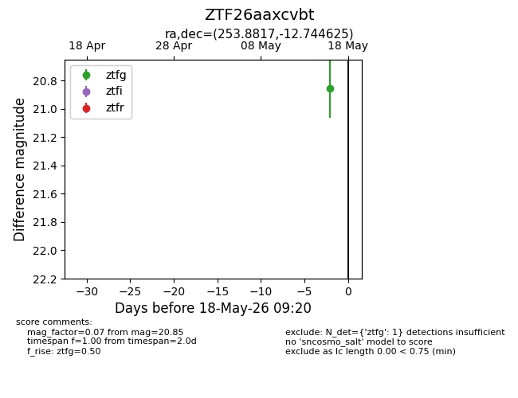
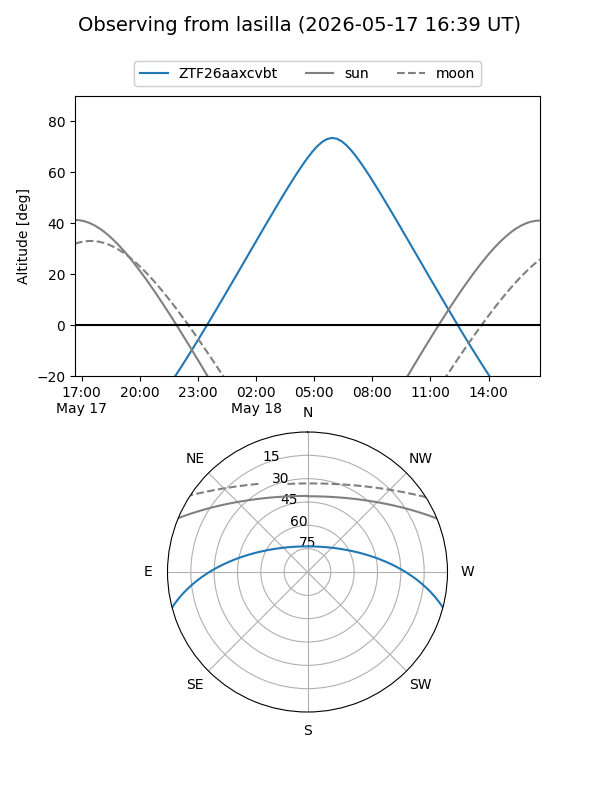
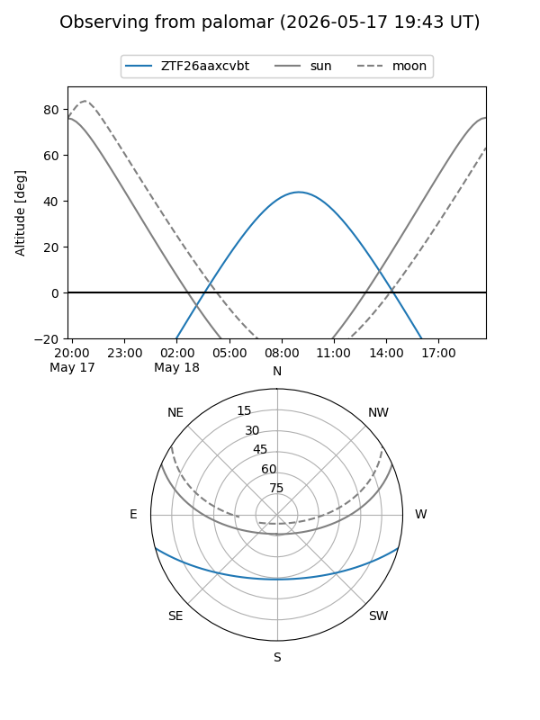

ZTF26aaxcvbt
Target ZTF26aaxcvbt at 2026-05-18 09:21
Aliases and brokers:
FINK: link
Lasair: link
ALeRCE: link
alt names
ZTF26aaxcvbt (ztf,fink_ztf)
Coordinates:
equatorial (ra, dec) = 253.8817,-12.74462
equatorial (HMS+DMS) = 16:55:31.61,-12:44:40.65
galactic (l, b) = (7.1687,+18.66033)
Flags:
Photometry:
last ztfg=20.85
1 ztfg detections
Lightcurve

Visibility


Additional plots